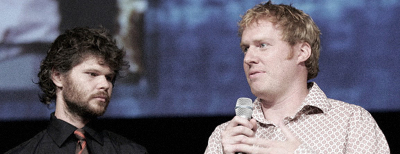

Trayectoria y contribuciones
Nacido en Estados Unidos, Casey Reas desarrolló su formación en diseño y medios digitales, consolidando una carrera que combina investigación, producción artística y docencia. Es ampliamente conocido por ser co-creador del lenguaje de programación Processing, junto a Ben Fry, una herramienta fundamental para artistas y diseñadores que trabajan con código.

A lo largo de su trayectoria, su obra ha sido exhibida en museos, galerías y festivales internacionales. Sus proyectos exploran tanto sistemas digitales como su materialización en formatos físicos, ampliando las posibilidades del arte generativo.
Su influencia se extiende también al ámbito educativo, donde ha contribuido a formar nuevas generaciones de artistas y desarrolladores.
El rol del artista-programador
En la práctica de Reas, el artista asume el rol de programador. En lugar de intervenir directamente sobre la imagen final, diseña el conjunto de instrucciones que dará lugar a múltiples resultados posibles.
Este cambio de rol implica una forma distinta de pensar el proceso creativo. La autoría se desplaza hacia el diseño del sistema, mientras que la ejecución introduce elementos de autonomía y sorpresa en la obra.

Influencia en el arte contemporáneo
La obra de Casey Reas ha tenido un impacto significativo en el desarrollo del arte digital y generativo. Su enfoque ha contribuido a legitimar el uso del código como un medio artístico en el contexto contemporáneo.
Su influencia puede observarse en numerosos artistas y proyectos que adoptan el pensamiento basado en sistemas y algoritmos.